Part 2: Quantitative Reasoning
Time-50 minutes for 30 Questions
Based on the directions given, indicate the best answer for each question.
Note:
- All numbers used are real numbers
- All figures are assumed to lie in a plane unless otherwise indicated.
- Geometric figures, such as lines, circles, triangles, and quadrilaterals, are not necessarily drawn to scale. That is, you should not assume that quantities such as lengths and angle measures are as they appear in a figure. You should assume, however, that lines shown as straight are actually straight, points on a line are in the order shown, and more generally, all geometric objects are in the relative positions shown. For questions with geometric figures, you should base your answers on geometric reasoning, not on estimating or comparing quantities by sight or by measurement.
- Coordinate systems, such as xy-planes and number lines, are drawn to scale; therefore, you can read, estimate, or compare quantities in such figures by sight or by measurement.
- Graphical data presentations, such as bar graphs, circle graphs, and line graphs, are drawn to scale; therefore, you can read, estimate, or compare data values by sight or by measurement.
- In a decimal number, a bar over one or more consecutive digits means that the pattern of digits under the bar repeats without end. For example, 0.387 5 0.387387387 . . .
- 4 percent of s is equal to 3 percent of t, where s > 0 and t > 0.
- Three circles with their centers on line segment PQ are tangent at points P, R, and Q, where point R lies on line segment PQ.
- In the xy-plane, the points (a,0) and (0, b) are on the line whose equation is
- The frequency distributions shown below represent two groups of data. Each of the data values is a multiple of 10.
- One person is to be selected at random from a group of 25 people. The probability that the selected person will be a male is 0.44, and the probability that the selected person will be a male who was born before 1960 is 0.28.
- If (a - b)/(a + b) = 2 and b = 1, what is the value of a? A 1
- The floor space in a certain market is rented for $15 per 30 square feet for one day. In the market, Alice rented a rectangular floor space that measured 8 feet by 15 feet, and Betty rented a rectangular floor space that measured 15 feet by 20 feet. If each woman rented her floor space for one day, how much more did Betty pay than Alice? A $27
- A business owner obtained a $6,000 loan at a simple annual interest rate of r percent in order to purchase a computer. After one year, the owner made a single payment of $6,840 to repay the loan, including the interest. What is the value of r ? A 7.0
- If 55x(25) = 55n, where n and x are integers, what is the value of n in terms of x? A. 5x+1
- What is the median of the percent values representing gasoline tax revenue as a percent of total retail gasoline sales for the nine countries listed in the bar graph? A 67.6%
- In 2000 the amount of Germany’s gasoline tax revenue was approximately what percent less than the amount of its income tax revenue? A 10%
- If Germany’s total tax revenue in 2000 was approximately $170 billion, approximately what was the amount of the total retail gasoline sales in Germany that year? A $10 billion
- Of the 180 judges appointed by a certain President, 30 percent were women and 25 percent were from 1 minority groups. If 1/9 of the women appointed were from minority groups, how many of the judges appointed were neither women nor from minority groups? A 75
- Although the film is rightly judged imperfect by most of today’s critics, the films being created today are it, since its release in 1940 provoked sufficient critical discussion to enhance the intellectual respectability of cinema considerably. A 75
- If an integer is divisible by both 8 and 15, then the integer also must be divisible by which of the following? A 16
- A certain experiment has three possible outcomes. The outcomes are mutually exclusive and have probabilities p, p/2, and p/4, respectively. What is the value of p? A 1/7
- Each month, a certain manufacturing company’s total expenses are equal to a fixed monthly expense plus a variable expense that is directly proportional to the number of units produced by the company during that month. If the company’s total expenses for a month in which it produces 20,000 units are $570,000, and the total expenses for a month in which it produces 25,000 units are $705,000, what is the company’s fixed monthly expense? A $27,000
- If 60 % of members of a club is men, what is the ratio of men to women in the club? A 5:4
- A person wants to divide birr 4,600 for his three children in the ratio of 1/2:2/3:3/4. What are the shares in birr of each child from the smallest to the largest amount? A 1200, 1400 and 2000
- A group consists of two male, two female and three children. The average age of the male is 67 years, that of the female is 35 years, and that of the children is six years. What is the average age of the group? A 30.71
- Thahir spends 32% of his total income to maintain his family, 23% on his personal expenses and 70% of the remaining on children’s education and saves the remaining. What percent of his income is his savings? A 13.8
- x < 0 and x2 <30
- In the diagram, AB is extended to point D
- Consider the figure given below
- let a + b = 2 and a2 + b2 = 2
- Let a1 = -1 and an+1 = an + 2n
For each of Questions 1 to 9, compare Quantity A and Quantity B, using additional information centered above the two quantities if such information is given. Select one of the four answer choices and click the circular buttons.
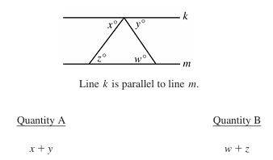
A. Quantity A is greater.
B. Quantity B is greater.
C.The two quantities are equal.
D. The relationship cannot be determined from the information given.
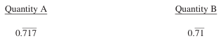
A. Quantity A is greater.
B. Quantity B is greater.
C.The two quantities are equal.
D. The relationship cannot be determined from the information given.
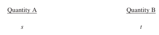
A. Quantity A is greater.
B. Quantity B is greater.
C.The two quantities are equal.
D. The relationship cannot be determined from the information given.
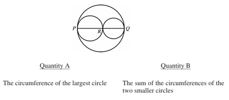
A. Quantity A is greater.
B. Quantity B is greater.
C.The two quantities are equal.
D. The relationship cannot be determined from the information given.
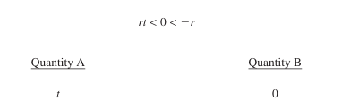
A. Quantity A is greater.
B. Quantity B is greater.
C.The two quantities are equal.
D. The relationship cannot be determined from the information given.
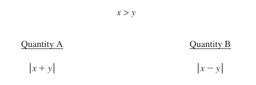
A. Quantity A is greater.
B. Quantity B is greater.
C.The two quantities are equal.
D. The relationship cannot be determined from the information given.
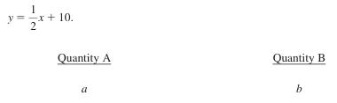
A. Quantity A is greater.
B. Quantity B is greater.
C.The two quantities are equal.
D. The relationship cannot be determined from the information given.
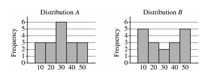
A. Quantity A is greater.
B. Quantity B is greater.
C.The two quantities are equal.
D. The relationship cannot be determined from the information given.
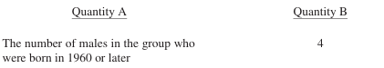
A. Quantity A is greater.
B. Quantity B is greater.
C.The two quantities are equal.
D. The relationship cannot be determined from the information given.
Questions 10 to 25 have several different formats. Unless otherwise directed, select a single answer choice. For Numeric Entry questions, follow the instructions below.
Numeric Entry Questions
B 0
C -1
D -2
E -3
B $36
C 54$
D $90
E $180
B 8.4
C 12.3
D 14.0
E 16.8
B. x + 2/5
C. 5x + 5
D. 10x
E. 10x + 2
Questions 14 to 16 are based on the following data.
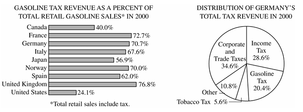
B 69.0%
C 70.0%
D 70.7%
E 72.7%
B 20%
C 30%
D 40%
E 50%
B $20 billion
C $30 billion
D $40 billion
E $50 billion
B 81
C 87
D 93
E 99
B 81
C 87
D 93
E 99
B 24
C 32
D 36
E 45
B 2/7
C 3/7
D 4/7
E 5/7
B $30,000
C $67,000
D $109,800
E $135,000
B 4:3
C 3:2
D 5:3
E 2:1
B 1200, 1600 and 1800
C 800,1600 and 2200
D 1000, 1600 and 2000
B 31.71
C 28.71
D 35.45
E 29.5
B 13.7.
C 13.6.
D 13.5
E 13.4
Quantitative comparison
The following 5 questions should be answered in the same as as the first 9 comparison questions
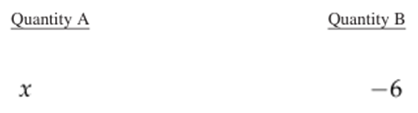
A. Quantity A is greater.
B. Quantity B is greater.
C.The two quantities are equal.
D. The relationship cannot be determined from the information given.
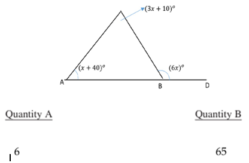
A. Quantity A is greater.
B. Quantity B is greater.
C.The two quantities are equal.
D. The relationship cannot be determined from the information given.
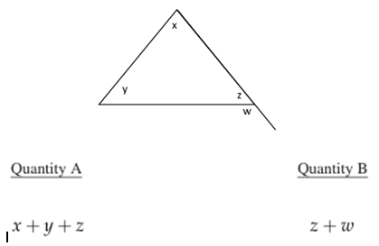
A. Quantity A is greater.
B. Quantity B is greater.
C.The two quantities are equal.
D. The relationship cannot be determined from the information given.
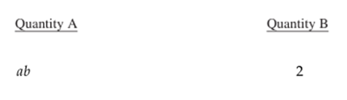
A. Quantity A is greater.
B. Quantity B is greater.
C.The two quantities are equal.
D. The relationship cannot be determined from the information given.
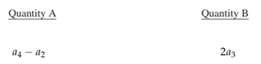
A. Quantity A is greater.
B. Quantity B is greater.
C.The two quantities are equal.
D. The relationship cannot be determined from the information given.